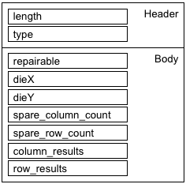

RARepairResultsAttrType
Contains results of a redundancy analysis. The data type is DRLRARepairResultsAttr.

Field Name |
Data Type |
Description |
Comments |
|---|---|---|---|
length |
int |
Attribute length |
These fields form the attribute header |
type |
short |
Attribute type |
|
repairable |
DRLFailureCode |
Whether the test device is repairable:
|
|
dieX |
unsigned long long |
The x dimension of the die |
|
dieY |
unsigned long long |
The y dimension of the die |
|
spare_column_count |
unsigned int |
Number of spare columns used for repairs |
|
spare_row_count |
unsigned int |
Number of spare columns used for repairs |
|
column_results |
DRLRARepairResult |
List of columns used for repairs. |
|
row_results |
DRLRARepairResult |
List of rows used for repairs. |
|
Functional changes
- Introduced in SmarTest 7.2.2